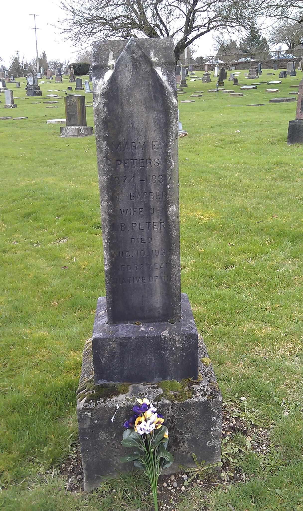

Margaret Peters (née Barber) 1860 - 1935
[ Home ] | [ Calendar ] | [ Surnames Index ] | [ Family History ]Margaret Barber, the wife of James Bedford Peters (the third cousin twice-removed on the father's side of Nigel Horne), was born in Nassagaweya, Halton, Ontario, Canada on Sep 7, 1860<span class="citation">1,2,3</span> and married James (with whom she had 1 child, ) in Vancouver, British Columbia, Canada on Aug 30, 1905<span class="citation">4</span>.</p><p>Throughout her life, she lived in New Westminster, British Columbia in 1911<span class="citation">1</span>. <p>She died on Aug 10, 1935 in New Westminster, British Columbia<span class="citation">2,3</span> and was buried there at Fraser Cemetery after Aug 10, 1935<span class="citation">3</span>.
Citations
- 1911 Census of Canada Online publication - Provo, UT, USA: Ancestry.com Operations Inc, 2006. .Original data - Library and Archives Canada. Census of Canada, 1911. Ottawa, Ontario, Canada: Library and Archives Canada, 2007. http://www.collectionscanada.gc.ca/databases/census-19 (Marital Status: Married; Relation to Head of House: Wife)
- British Columbia, Canada, Death Index, 1872-1990 Ancestry.com Operations Inc
- Canada, Find A Grave Index, 1600s-Current Ancestry.com Operations, Inc.
- British Columbia, Canada, Marriage Index, 1872-1935 Ancestry.com Operations Inc
- Canada Census 1911 - Findmypast (was the wife of the head of the household)
Media
Margaret Barber - gravestone

Canada Census 1911 Transcription - CAN-CENSUS-1911-00517264
Canada Census 1911 - CAN/CENSUS/1911/00517265
Family Tree

Generated by Ged2Site. Last updated on Jul 20, 2025